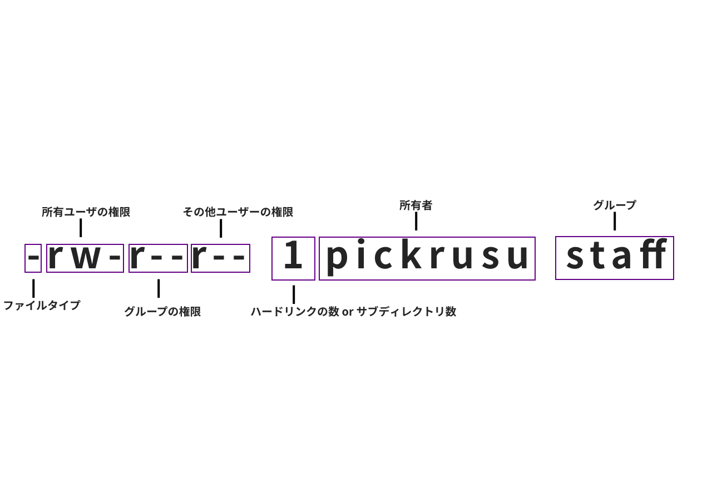

Linux (user/group/cron)
***
Linuxユーザーとは?
ユーザとはコンピュータに限らずに物を使用する人をさして「ユーザ」ということが多い。広義では使う形態を問わない。 今回はLinux環境にログインするためのアカウントをさしてユーザと呼ぶ
ログイン方法
- ID/PWDによるログイン
Linuxは一般的なオペレーティングシステムと同じで、実際に使用するにはユーザとしてログインする必要がある。ログインに必要なものは 1.ユーザ名 2.パスワード この二つが必要になる。
- 鍵交換によるログイン
秘密鍵と公開鍵を使用してパスワードなしでサーバー上にログイン可能にする 1.クライアント側で秘密鍵、公開鍵を生成 (最初の一回のみ) 2.サーバー側に公開鍵の設置 (ユーザーと公開鍵を結びつける) 3.鍵交換方式によりログイン可能となる
ユーザーの種類
- rootユーザー
rootユーザであれば自分自身を削除するコマンドも受け付けてしまうし、他人のユーザアカウントを削除することも可能となっている。よってシステムの設定ファイルなどを変更するとき以外使用しないようにするのが一般的
- 一般ユーザー
一般ユーザの場合自分専用のディレクトリが割り当てられ、その中で作業をすることになる 基本的にシステムに、変更を勝手にくわえることは出来ないようになっている。 もし一時的にroot権限をかりたい場合は「su」や「sudo」といったコマンドを使用することになる。
Linuxグループとは？
Linuxは複数人のユーザが同時にアクセスできる のため、同時に色々なところから、複数のユーザがログインすることになる。これらのユーザを管理する仕組みとして「グループ」という概念がある。 ファイルにアクセスするには「パーミション（権限）」という考え方がある。 Linuxではファイルやディレクトリは3つの権限に区分けされる。 1.所有者が実行出来る権限 2.グループが実行出来る権限 3.その他のユーザが実行出来る権限 もし、グループがなかったら、所有者とそれ以外しか権限の割り振りができなくなってしまう。複数人でファイルを管理することができなくなってしまう
パーミッションとは?
ファイルやディレクトリ一個一個に許可属性を与え、管理出来るようになっている。これを「パーミッション」という。 不意な誤動作をしてもシステムに与える影響を最小限とするため パーミッションはセキュリティ上、重要である
パーミッションの見方
❯ ls -la [09:17:38]
total 208
drwxr-xr-x 9 pickrusu staff 288 9 19 09:17 .
drwxr-xr-x 5 pickrusu staff 160 8 21 13:22 ..
-rw-r--r-- 1 pickrusu staff 21991 9 18 15:27 backend-primer-vol1.pug
-rw-r--r-- 1 pickrusu staff 20384 9 18 23:10 backend-primer-vol2.pug
-rw-r--r-- 1 pickrusu staff 3669 9 18 14:11 backend-primer-vol3.pug
-rw-r--r-- 1 pickrusu staff 11198 8 27 17:23 canvas-photo-editor.pug
-rw-r--r-- 1 pickrusu staff 37333 9 6 21:48 frontend-web-performance.pug
drwxr-xr-x 3 pickrusu staff 96 9 18 11:12 layout
-rw-r--r-- 1 pickrusu staff 3679 9 19 09:17 linux-user-group.pug基本的なパラメーターは以下となる r:読み込み許可 ファイルを開くときなどに必要な権限である。これがないとファイルが開けない w:書き込み許可 ファイルを編集変更する場合に必要な権限である。「r」と組み合わせて使用する。所有者には基本的に読み込み、書き込み両方の権限がわりあてられることが多い。 x:このフラグが設定されていると、ファイルに実行権限が与えられ実行可能となる。スクリプトなどの場合実行権限を割り当てることになる。
パーミッションの設定
| コマンド | パラメーター |
|---|---|
| 0 | --- |
| 1 | --x |
| 2 | -w- |
| 3 | -wx |
| 4 | r-- |
| 5 | r-x |
| 6 | rw- |
| 7 | rwx |
例
❯ ls -la canvas-photo-editor.pug [10:12:53]
-rw-r--r-- 1 pickrusu staff 11198 8 27 17:23 canvas-photo-editor.pug
❯ chmod 740 canvas-photo-editor.pug
❯ ls -la canvas-photo-editor.pug
-rwxr----- 1 pickrusu staff 11198 8 27 17:23 canvas-photo-editor.pugCronとは?
cronデーモンと呼ばれるバックグラウンドで動いているプログラムによって スケジュールされたコマンドやスクリプトが実行される。